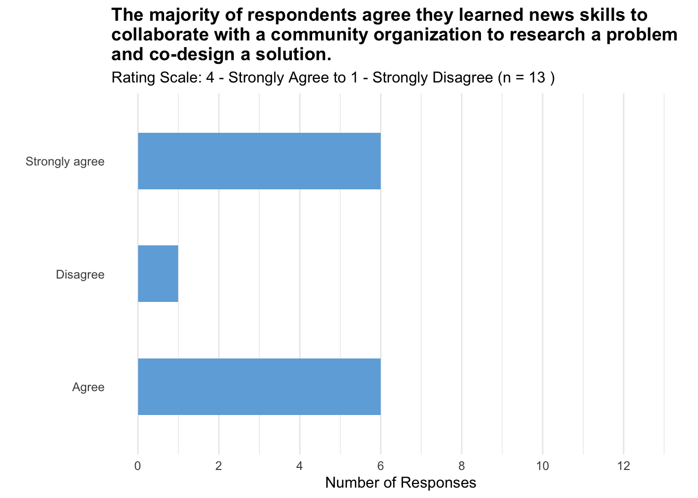
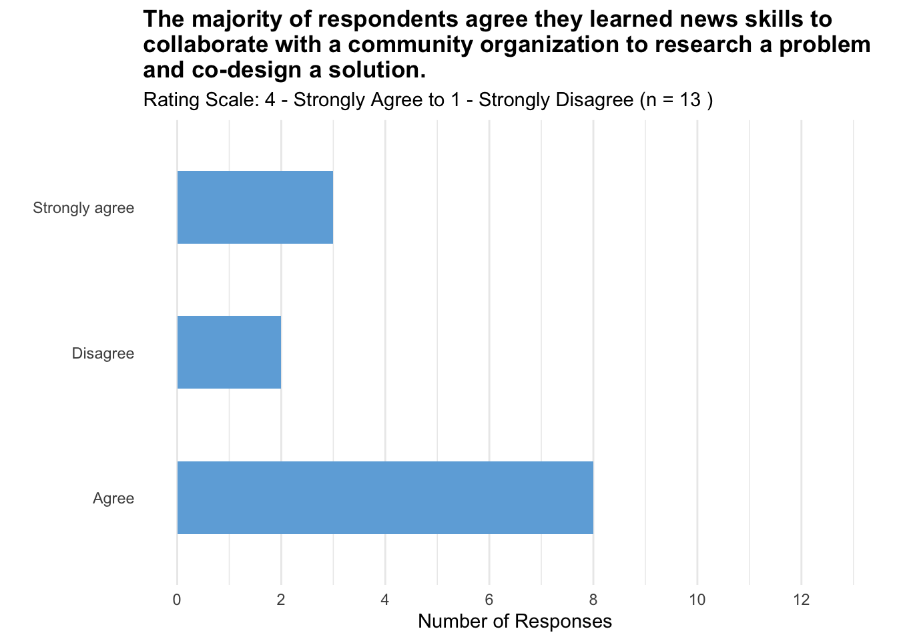
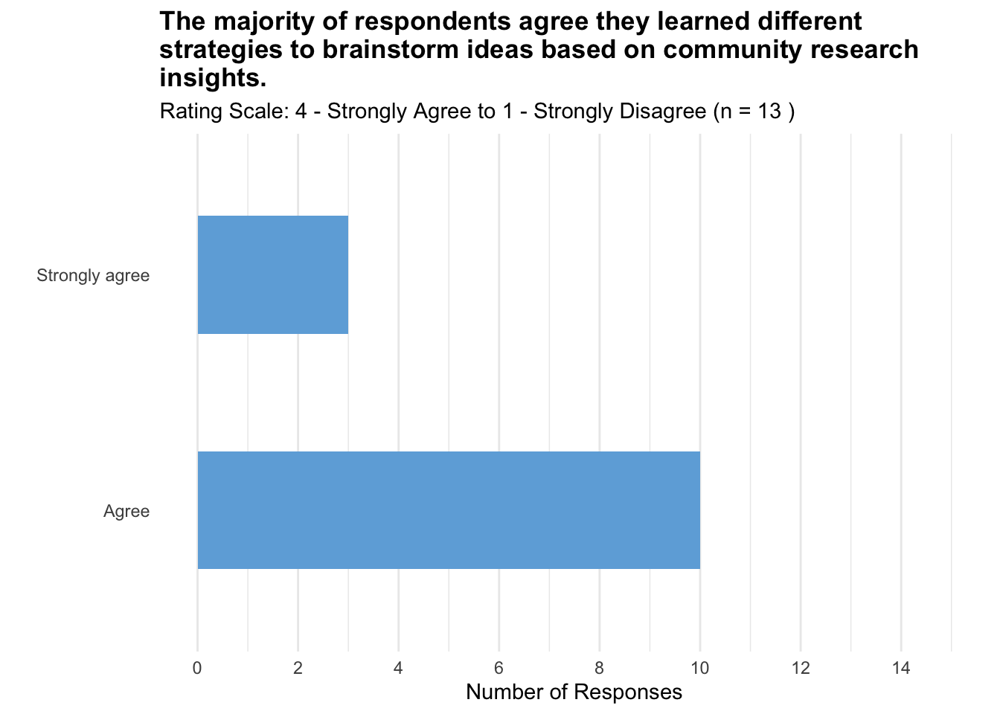
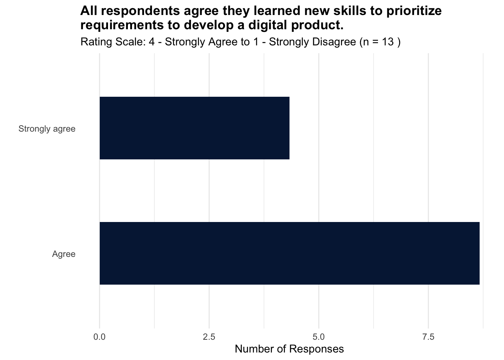
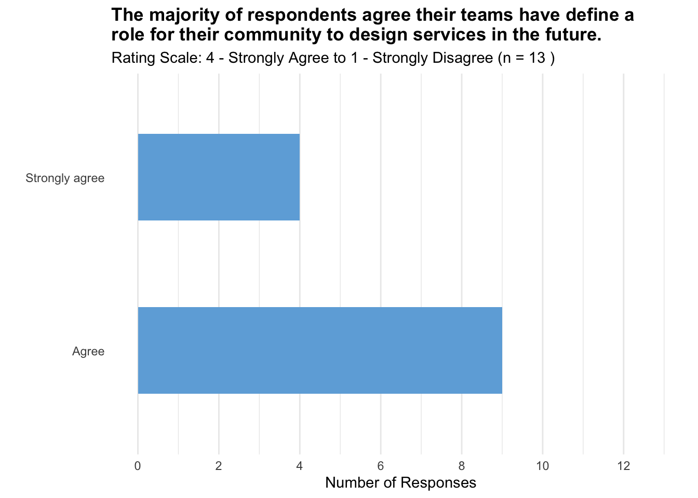
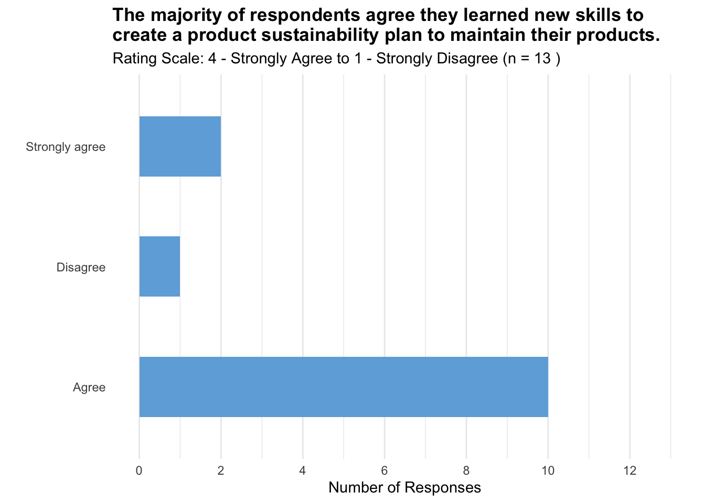
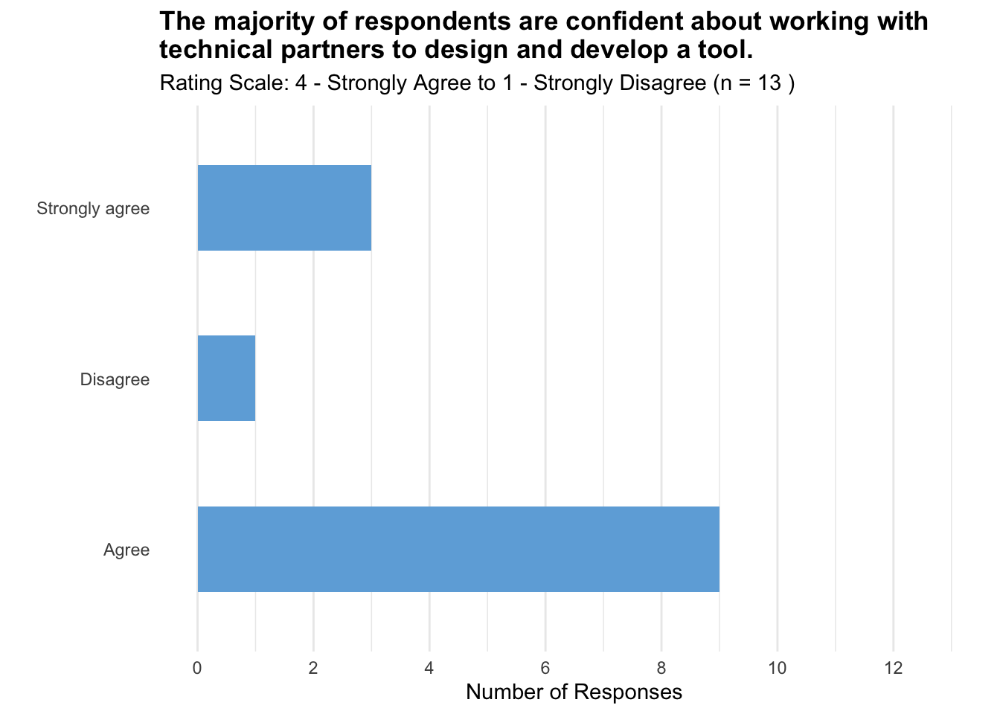
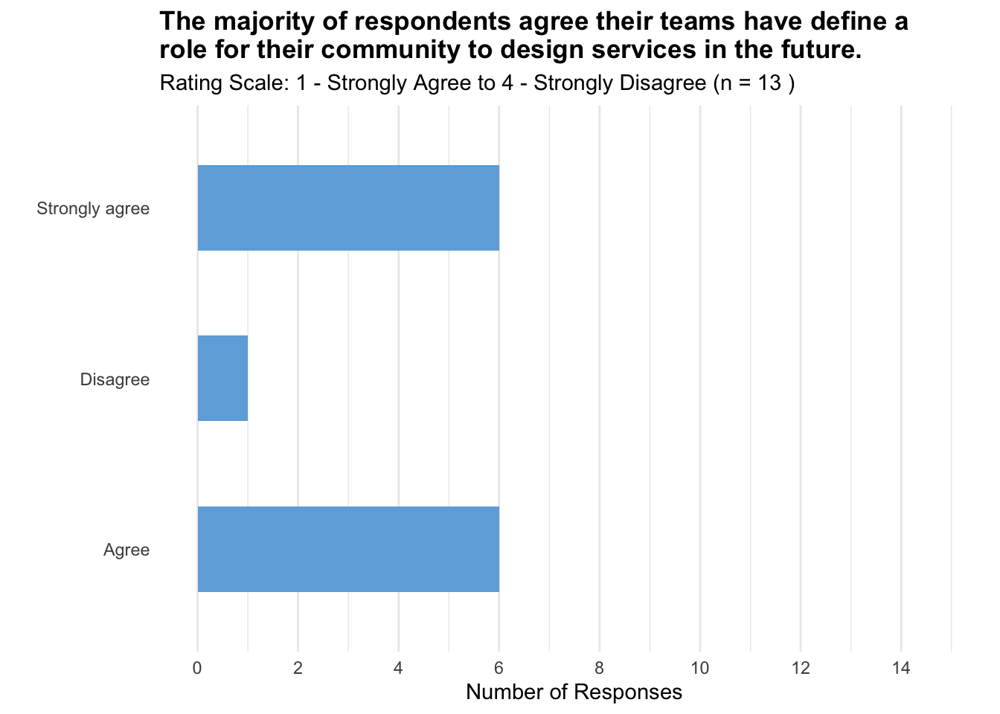

Graphs for post-test survey analysis for city governments.
Design Weights
TBD (to align proportions for population to sample)
Survey Question Weights
TBD (to show summary statistics for the likert scale)
Participant Background
Q3. Which city/county are you representing?
Akron, OH and Macon-Bibb County, GA are the most represented in the survey, each with 4 responses.
Miami-Dade County, FL follows with 3 responses.
Detroit, MI has the fewest responses, with only 2.
Show the code
# Set a CRAN mirroroptions(repos =c(CRAN ="https://cloud.r-project.org"))# Install necessary packages# install.packages("magrittr")# install.packages("dplyr")# install.packages("ggplot2")# install.packages("knitr")# install.packages("KableExtra")# Load the packageslibrary(magrittr)library(dplyr)library(ggplot2)library(knitr)# Read the data from the CSV filecohort3FinalGov <-read.csv("~/Documents/GitHub/TOPC-impact-evaluation-dashboard/Cohort 3/cohort3FinalGov2.csv")# Analyze and visualize the "q3" columnq3_summary_df <- cohort3FinalGov %>%group_by(q3) %>%summarise(Frequency =n())# Calculate total number of responses for the titletotal_responses <-sum(q3_summary_df$Frequency)names(q3_summary_df)[1] <-"City"# Order cities by frequency and converting to factorq3_summary_df <- q3_summary_df %>%mutate(City =factor(City, levels = City[order(-Frequency)]))# Plot the dataggplot(q3_summary_df, aes(x = City, y = Frequency)) +geom_bar(stat ="identity", fill ="#6eaddc", width =0.5) +coord_flip() +labs(title ="All city governments participated in the survey with highest from Akron and Macon-Bibb County.",subtitle =paste("Total number of survey respondents per city team (n =", total_responses, ")"),x ="",y ="Number of Responses") +theme_minimal() +theme(panel.grid.major.y =element_blank(), panel.grid.minor.y =element_blank(),plot.title =element_text(face ="bold"))
Show the code
# | echo: falsesummary(q3_summary_df)
City Frequency
Akron, OH :1 Min. :2.00
Macon-Bibb County, GA:1 1st Qu.:2.75
Miami-Dade County, FL:1 Median :3.50
Detroit, MI :1 Mean :3.25
3rd Qu.:4.00
Max. :4.00
Goal 1: Participant Awareness and Knowledge
Q4. I learned new skills in community research practices, such as leading interviews and conducting surveys, during this program.
Show the code
# Analyzing and visualizing the "q4" columnq4_summary_df <- cohort3FinalGov %>%group_by(q4) %>%summarise(Frequency =n())# Calculate total number of responsestotal_responses <-sum(q4_summary_df$Frequency)# Plotting the dataggplot(q4_summary_df, aes(x = q4, y = Frequency)) +geom_bar(stat ="identity", fill ="#6eaddc", width =0.5) +coord_flip() +scale_y_continuous(limits =c(0, 15), breaks =seq(0, 15, by =2)) +labs(title ="All respondents agree they learned new skills in community research practices.",subtitle =paste("Rating Scale: 4 - Strongly Agree to 1 - Strongly Disagree (n =", total_responses, ")"),x ="",y ="Number of Responses") +theme_minimal() +theme(panel.grid.major.y =element_blank(), panel.grid.minor.y =element_blank(),plot.title =element_text(face ="bold"))
Show the code
# | echo: falsesummary(q4_summary_df)
q4 Frequency
Length:2 Min. : 3.00
Class :character 1st Qu.: 4.75
Mode :character Median : 6.50
Mean : 6.50
3rd Qu.: 8.25
Max. :10.00
Q5. I learned skills to promote equity and foster inclusive spaces in my work.
Show the code
# Analyze and visualize the "q5" columnq5_summary_df <- cohort3FinalGov %>%group_by(q5) %>%summarise(Frequency =n())# Calculate total number of responsestotal_responses <-sum(q5_summary_df$Frequency)# Plotting the dataggplot(q5_summary_df, aes(x = q5, y = Frequency)) +geom_bar(stat ="identity", fill ="#6eaddc", width =0.5) +coord_flip() +scale_y_continuous(limits =c(0, 15), breaks =seq(0, 15, by =2)) +labs(title =paste("All respondents agree they learned skills to promote equity and foster inclusive spaces in their work (n =", total_responses, ")."),subtitle ="Rating Scale: 4 - Strongly Agree to 1 - Strongly Disagree",x ="",y ="Number of Responses") +theme_minimal() +theme(panel.grid.major.y =element_blank(), panel.grid.minor.y =element_blank(),plot.title =element_text(face ="bold"))
Show the code
# | echo: falsesummary(q5_summary_df)
q5 Frequency
Length:2 Min. :4.00
Class :character 1st Qu.:5.25
Mode :character Median :6.50
Mean :6.50
3rd Qu.:7.75
Max. :9.00
Q6. I learned new skills in applying user testing feedback to shape the development of our solution.
Show the code
# Analyze and visualize the "q6" columnq6_summary_df <- cohort3FinalGov %>%group_by(q6) %>%summarise(Frequency =n())# Calculate total number of responsestotal_responses <-sum(q6_summary_df$Frequency)# Plotting the dataggplot(q6_summary_df, aes(x = q6, y = Frequency)) +geom_bar(stat ="identity", fill ="#6eaddc", width =0.5) +coord_flip() +scale_y_continuous(limits =c(0, 15), breaks =seq(0, 15, by =2)) +labs(title ="All respondents agree they learned new skills to apply user testing feedback in their solution development.",subtitle =paste("Rating Scale: 4 - Strongly Agree to 1 - Strongly Disagree (n =", total_responses, ")"),x ="",y ="Number of Responses") +theme_minimal() +theme(panel.grid.major.y =element_blank(), panel.grid.minor.y =element_blank(),plot.title =element_text(face ="bold"))
Show the code
# | echo: falsesummary(q6_summary_df)
q6 Frequency
Length:2 Min. :5.00
Class :character 1st Qu.:5.75
Mode :character Median :6.50
Mean :6.50
3rd Qu.:7.25
Max. :8.00
Q15. I learned new skills in collaborating with a community organization to research a problem and co-design a solution.
Show the code
# Analyze and visualize the "q15" columnq15_summary_df <- cohort3FinalGov %>%group_by(q15) %>%summarise(Frequency =n())# Calculate total number of responsestotal_responses <-sum(q15_summary_df$Frequency)# Plotting the dataggplot(q15_summary_df, aes(x = q15, y = Frequency)) +geom_bar(stat ="identity", fill ="#6eaddc", width =0.5) +coord_flip() +scale_y_continuous(limits =c(0, 13), breaks =seq(0, 15, by =2)) +labs(title ="The majority of respondents agree they learned news skills to collaborate with a community organization to research a problemand co-design a solution.",subtitle =paste("Rating Scale: 4 - Strongly Agree to 1 - Strongly Disagree (n =", total_responses, ")"),x ="",y ="Number of Responses") +theme_minimal() +theme(panel.grid.major.y =element_blank(), panel.grid.minor.y =element_blank(),plot.title =element_text(face ="bold"))

Q16. I learned new skills in building consensus and aligning on long-term plans with internal stakeholders.
Show the code
# Analyze and visualize the "q16" columnq16_summary_df <- cohort3FinalGov %>%group_by(q16) %>%summarise(Frequency =n())# Calculate total number of responsestotal_responses <-sum(q16_summary_df$Frequency)# Plotting the dataggplot(q16_summary_df, aes(x = q16, y = Frequency)) +geom_bar(stat ="identity", fill ="#6eaddc", width =0.5) +coord_flip() +scale_y_continuous(limits =c(0, 13), breaks =seq(0, 15, by =2)) +labs(title ="The majority of respondents agree they learned news skills to collaborate with a community organization to research a problemand co-design a solution.",subtitle =paste("Rating Scale: 4 - Strongly Agree to 1 - Strongly Disagree (n =", total_responses, ")"),x ="",y ="Number of Responses") +theme_minimal() +theme(panel.grid.major.y =element_blank(), panel.grid.minor.y =element_blank(),plot.title =element_text(face ="bold"))

Q9. I learned different strategies to brainstorm many ideas based on the insights taken from the community research.
Show the code
# Create q9_summary_dfq9_summary_df <- cohort3FinalGov %>%group_by(q9) %>%summarise(Frequency =n())# Calculate total number of responsestotal_responses <-sum(q9_summary_df$Frequency)# Plot the data with a fixed scaleggplot(q9_summary_df, aes(x = q9, y = Frequency)) +geom_bar(stat ="identity", fill ="#6eaddc", width =0.5) +coord_flip() +scale_y_continuous(limits =c(0, 15), breaks =seq(0, 15, by =2)) +labs(title ="The majority of respondents agree they learned different strategies to brainstorm ideas based on community research insights.",subtitle =paste("Rating Scale: 4 - Strongly Agree to 1 - Strongly Disagree (n =", total_responses, ")"),x ="",y ="Number of Responses") +theme_minimal() +theme(panel.grid.major.y =element_blank(), panel.grid.minor.y =element_blank(),plot.title =element_text(face ="bold"))

Show the code
# | echo: falsesummary(q9_summary_df)
q9 Frequency
Length:2 Min. : 3.00
Class :character 1st Qu.: 4.75
Mode :character Median : 6.50
Mean : 6.50
3rd Qu.: 8.25
Max. :10.00
Q10. I learned new skills in outlining and prioritizing requirements for the development of a digital product.
Show the code
# Analyze and visualize the "q10" columnq10_summary_df <- cohort3FinalGov %>%group_by(q10) %>%summarise(Frequency =n())# Calculate total number of responsestotal_responses <-sum(q10_summary_df$Frequency)# Plotting the dataggplot(q10_summary_df, aes(x = q10, y = Frequency)) +geom_bar(stat ="identity", fill ="#6eaddc", width =0.5) +coord_flip() +scale_y_continuous(limits =c(0, 15), breaks =seq(0, 15, by =2)) +labs(title ="The majority of respondents agree their teams have define a role for their community to design services in the future.",subtitle =paste("Rating Scale: 4 - Strongly Agree to 1 - Strongly Disagree (n =", total_responses, ")"),x ="",y ="Number of Responses") +theme_minimal() +theme(panel.grid.major.y =element_blank(), panel.grid.minor.y =element_blank(),plot.title =element_text(face ="bold"))

Show the code
# | echo: falsesummary(q10_summary_df)
q10 Frequency
Length:2 Min. :4.00
Class :character 1st Qu.:5.25
Mode :character Median :6.50
Mean :6.50
3rd Qu.:7.75
Max. :9.00
Q11. I learned new skills in identifying and evaluating data to support the digital solution.
Show the code
# Analyze and visualize the "q11" columnq11_summary_df <- cohort3FinalGov %>%group_by(q11) %>%summarise(Frequency =n())# Calculate total number of responsestotal_responses <-sum(q11_summary_df$Frequency)# Plotting the dataggplot(q11_summary_df, aes(x = q11, y = Frequency)) +geom_bar(stat ="identity", fill ="#6eaddc", width =0.5) +coord_flip() +scale_y_continuous(limits =c(0, 13), breaks =seq(0, 15, by =2)) +labs(title ="The majority of respondents agree their teams have define a role for their community to design services in the future.",subtitle =paste("Rating Scale: 4 - Strongly Agree to 1 - Strongly Disagree (n =", total_responses, ")"),x ="",y ="Number of Responses") +theme_minimal() +theme(panel.grid.major.y =element_blank(), panel.grid.minor.y =element_blank(),plot.title =element_text(face ="bold"))

Show the code
# | echo: falsesummary(q11_summary_df)
q11 Frequency
Length:2 Min. :4.00
Class :character 1st Qu.:5.25
Mode :character Median :6.50
Mean :6.50
3rd Qu.:7.75
Max. :9.00
Q12. I learned new skills for managing the development of a digital product.
Show the code
# Analyze and visualize the "q12" columnq12_summary_df <- cohort3FinalGov %>%group_by(q12) %>%summarise(Frequency =n())# Calculate total number of responsestotal_responses <-sum(q12_summary_df$Frequency)# Plotting the dataggplot(q12_summary_df, aes(x = q12, y = Frequency)) +geom_bar(stat ="identity", fill ="#6eaddc", width =0.5) +coord_flip() +scale_y_continuous(limits =c(0, 13), breaks =seq(0, 15, by =2)) +labs(title ="The majority of respondents agree they learned new skills to managedeveloping a digital product.",subtitle =paste("Rating Scale: 4 - Strongly Agree to 1 - Strongly Disagree (n =", total_responses, ")"),x ="",y ="Number of Responses") +theme_minimal() +theme(panel.grid.major.y =element_blank(), panel.grid.minor.y =element_blank(),plot.title =element_text(face ="bold"))
Show the code
# | echo: falsesummary(q12_summary_df)
q12 Frequency
Length:3 Min. :2.000
Class :character 1st Qu.:2.500
Mode :character Median :3.000
Mean :4.333
3rd Qu.:5.500
Max. :8.000
Q13. I learned new skills for creating a product sustainability plan to ensure that product is improved and maintained.
Show the code
# Analyze and visualize the "q13" columnq13_summary_df <- cohort3FinalGov %>%group_by(q13) %>%summarise(Frequency =n())# Calculate total number of responsestotal_responses <-sum(q13_summary_df$Frequency)# Plotting the dataggplot(q13_summary_df, aes(x = q13, y = Frequency)) +geom_bar(stat ="identity", fill ="#6eaddc", width =0.5) +coord_flip() +scale_y_continuous(limits =c(0, 13), breaks =seq(0, 15, by =2)) +labs(title ="The majority of respondents agree they learned new skills to create a product sustainability plan to maintain their products.",subtitle =paste("Rating Scale: 4 - Strongly Agree to 1 - Strongly Disagree (n =", total_responses, ")"),x ="",y ="Number of Responses") +theme_minimal() +theme(panel.grid.major.y =element_blank(), panel.grid.minor.y =element_blank(),plot.title =element_text(face ="bold"))

Summary statistics of Q13 frequency count
Show the code
# | echo: falsesummary(q13_summary_df)
q13 Frequency
Length:3 Min. : 1.000
Class :character 1st Qu.: 1.500
Mode :character Median : 2.000
Mean : 4.333
3rd Qu.: 6.000
Max. :10.000
Goal 2: Participant Confidence and Competence
Q14. I have the skills and support to be able to innovate in my day-to-day work.
Show the code
# Analyze and visualize the "q13" columnq14_summary_df <- cohort3FinalGov %>%group_by(q14) %>%summarise(Frequency =n())# Calculate total number of responsestotal_responses <-sum(q14_summary_df$Frequency)# Plotting the dataggplot(q14_summary_df, aes(x = q14, y = Frequency)) +geom_bar(stat ="identity", fill ="#6eaddc", width =0.5) +coord_flip() +scale_y_continuous(limits =c(0, 13), breaks =seq(0, 15, by =2)) +labs(title ="The majority of respondents agree they have the skills and support to innovate in their everyday work.",subtitle =paste("Rating Scale: 4 - Strongly Agree to 1 - Strongly Disagree (n =", total_responses, ")"),x ="",y ="Number of Responses") +theme_minimal() +theme(panel.grid.major.y =element_blank(), panel.grid.minor.y =element_blank(),plot.title =element_text(face ="bold"))
Q17. I feel confident working with technical partners to design a tool and advance the tool’s development.
Show the code
# Analyze and visualize the "q17" columnq17_summary_df <- cohort3FinalGov %>%group_by(q17) %>%summarise(Frequency =n())# Calculate total number of responsestotal_responses <-sum(q17_summary_df$Frequency)# Plotting the dataggplot(q17_summary_df, aes(x = q17, y = Frequency)) +geom_bar(stat ="identity", fill ="#6eaddc", width =0.5) +coord_flip() +scale_y_continuous(limits =c(0, 13), breaks =seq(0, 15, by =2)) +labs(title ="The majority of respondents are confident about working with technical partners to design and develop a tool.",subtitle =paste("Rating Scale: 4 - Strongly Agree to 1 - Strongly Disagree (n =", total_responses, ")"),x ="",y ="Number of Responses") +theme_minimal() +theme(panel.grid.major.y =element_blank(), panel.grid.minor.y =element_blank(),plot.title =element_text(face ="bold"))

Goal 3: Participant Recognition and Application of Methods
Q20. I am applying the skills I’m learning in this program to my day-to-day work.
Show the code
# Analyze and visualize the "q20" columnq20_summary_df <- cohort3FinalGov %>%group_by(q20) %>%summarise(Frequency =n())# Calculate total number of responsestotal_responses <-sum(q20_summary_df$Frequency)# Plotting the dataggplot(q20_summary_df, aes(x = q20, y = Frequency)) +geom_bar(stat ="identity", fill ="#6eaddc", width =0.5) +coord_flip() +scale_y_continuous(limits =c(0, 13), breaks =seq(0, 15, by =2)) +labs(title ="The majority of respondents are applying the skills they learnedin the program in their everyday work.",subtitle =paste("Rating Scale: 4 - Strongly Agree to 1 - Strongly Disagree (n =", total_responses, ")"),x ="",y ="Number of Responses") +theme_minimal() +theme(panel.grid.major.y =element_blank(), panel.grid.minor.y =element_blank(),plot.title =element_text(face ="bold"))
Q7. My team has defined a role for residents or the community in designing services moving forward.
Show the code
# Analyze and visualize the "q7" columnq7_summary_df <- cohort3FinalGov %>%group_by(q7) %>%summarise(Frequency =n())# Calculate total number of responsestotal_responses <-sum(q7_summary_df$Frequency)# Plotting the dataggplot(q7_summary_df, aes(x = q7, y = Frequency)) +geom_bar(stat ="identity", fill ="#6eaddc", width =0.5) +coord_flip() +scale_y_continuous(limits =c(0, 15), breaks =seq(0, 15, by =2)) +labs(title ="The majority of respondents agree their teams have define a role for their community to design services in the future.",subtitle =paste("Rating Scale: 4 - Strongly Agree to 1 - Strongly Disagree (n =", total_responses, ")"),x ="",y ="Number of Responses") +theme_minimal() +theme(panel.grid.major.y =element_blank(), panel.grid.minor.y =element_blank(),plot.title =element_text(face ="bold"))

Show the code
# | echo: falsesummary(q7_summary_df)
q7 Frequency
Length:3 Min. :1.000
Class :character 1st Qu.:3.500
Mode :character Median :6.000
Mean :4.333
3rd Qu.:6.000
Max. :6.000
Goal 4: Participant Satisfaction and Intention to Action
Q21. I would recommend this program to my peers.
Show the code
# Analyze and visualize the "q21" columnq21_summary_df <- cohort3FinalGov %>%group_by(q21) %>%summarise(Frequency =n())# Calculate total number of responsestotal_responses <-sum(q21_summary_df$Frequency)# Plotting the dataggplot(q21_summary_df, aes(x = q21, y = Frequency)) +geom_bar(stat ="identity", fill ="#6eaddc", width =0.5) +coord_flip() +scale_y_continuous(limits =c(0, 13), breaks =seq(0, 15, by =2)) +labs(title ="All respondents would recommend this program to their peers.",subtitle =paste("Rating Scale: 4 - Strongly Agree to 1 - Strongly Disagree (n =", total_responses, ")"),x ="",y ="Number of Responses") +theme_minimal() +theme(panel.grid.major.y =element_blank(), panel.grid.minor.y =element_blank(),plot.title =element_text(face ="bold"))